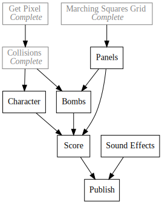

8Bomb
Another Bomb Survival Demake
2019-02-13

8Bomb is a remake in SCRIPT-8 of a game I built in highschool based on a silly Little Big Planet minigame my friends and I liked.
Along the way I plan on building a simplified destructible terrain renderer and a verlet integration based physics engine. I hope to do a fair amount of polish on the project and use it as a forcing function for building games on the engine. Any friction or missing features I find, I hope to contribute pull requests to fix myself. If I find the simplified version satisfying I may try to wrap it up in a phone game or something related in the future. We'll see where it takes me!
Dev Log
8Bomb is a part of my push to make tangible and documented progress on a project every day.
Day7 - Contributing to Open Source
Day11 - Marching Squares
Day15 - 8Bomb Physics
Day16 - SCRIPT-8 Pull Requests
Day17 - 8Bomb Camera
Day18 - 8Bomb Camera Fixes
Day20 - SCRIPT-8 Crisis
Day21 - 8Bomb Version 0.1
Day23 - Rocks and Explosions
Day24 - 8Bomb Refactors
Day25 - Game Over Screen
Day27 - 8Bomb Performance and Cleanup
Day30 - SCRIPT-8 FrameBuffer Renderer
Day31 - 8Bomb State Management
Day34 - Eval Error Sources
Day58 - 8Bomb Logo
Day59 - 8Bomb Start Screen